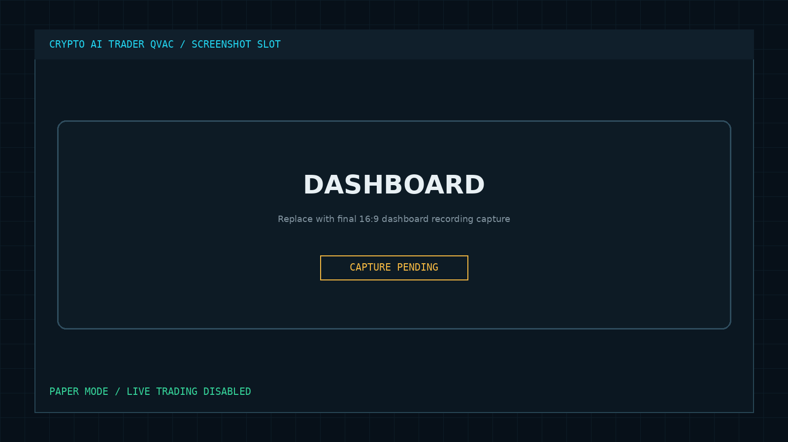
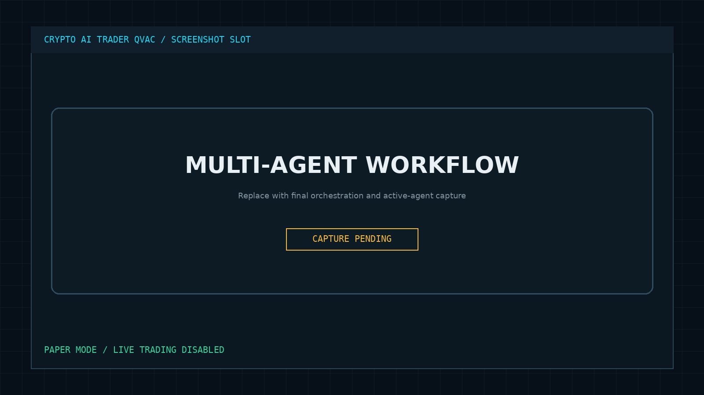
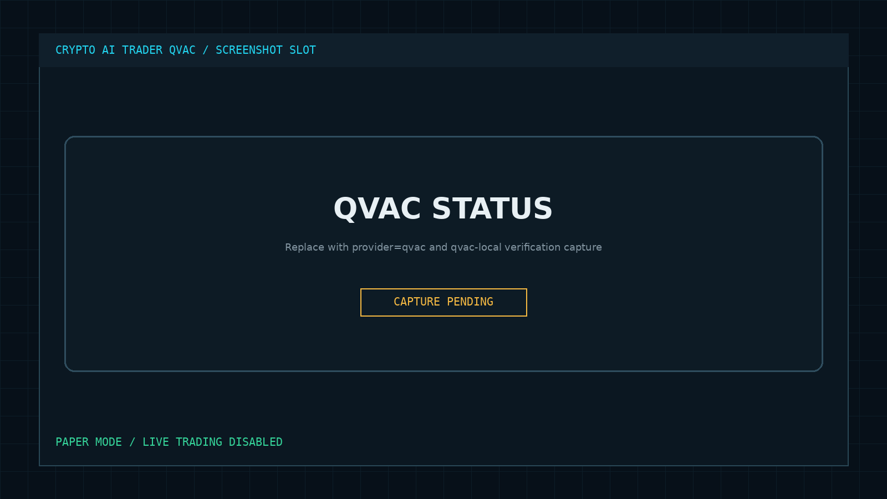
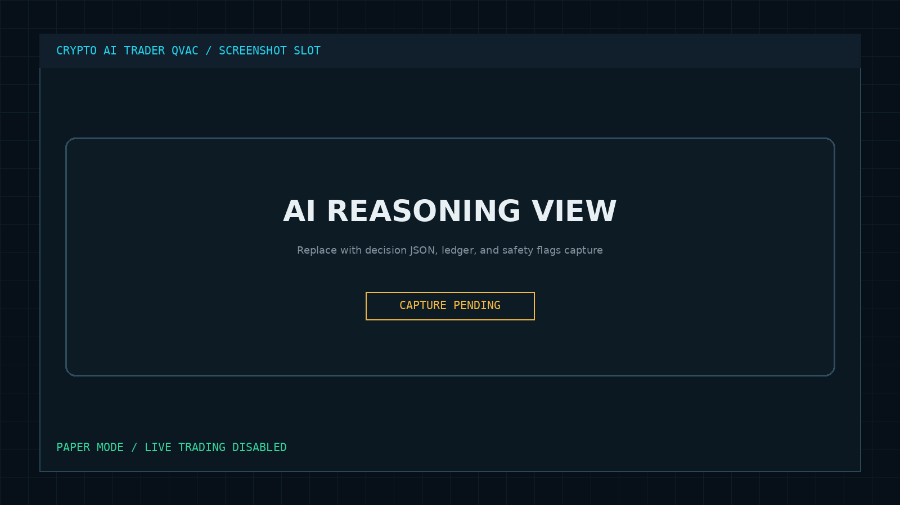

VERIFIED LOCAL EDGE AI / PAPER MODE
Seven agents.
One auditable decision.
Crypto AI Trader turns public market context into structured intelligence. QVAC explains the constrained result locally, while deterministic safety controls remain authoritative.
Research demonstration. No live execution. No profit claims. Not financial advice.
THE PROBLEM
AI decisions are easy to claim and hard to verify.
Cloud-first market systems send sensitive context away from the operator, inherit remote availability, and rarely prove which provider produced a result.
Multi-agent systems add more opaque context. Judges need visible roles, trust boundaries, provider evidence, and safety controls, not another black-box prediction.
THE SOLUTION
Separate evidence, explanation, and authority.
Specialists compute bounded signals. A deterministic supervisor and risk gate constrain the decision. QVAC explains locally. SQLite records the complete evidence trail.
Bounded agent roles
Market, news, sentiment, whale, and liquidation agents produce inspectable inputs.
Deterministic safety
Risk policy can force HOLD and cannot be overridden by model output.
Persistent telemetry
Provider, votes, flags, timestamps, and structured results are stored locally.
ARCHITECTURE
A local-first trust boundary
QVAC is a bounded explanation layer after deterministic voting and risk evaluation. It is not the safety authority.
01Public DataMarket + news
→
02SpecialistsStructured signals
→
03Risk GateCan force HOLD
→
04QVACLocal explanation
→
05LedgerSQLite evidence
→
06DashboardJudge proof
AUTONOMOUS WORKFLOW
Every stage leaves evidence.
One bounded cycle moves from inputs to specialist analysis, deterministic controls, local explanation, and persisted output.
- 01IngestRead public market snapshots and available news context.
- 02AnalyzeRun five specialist intelligence roles.
- 03SynthesizeAggregate votes and calculate deterministic confidence.
- 04GateApply paper, lockdown, confidence, liquidation, stop, and loss controls.
- 05ExplainAsk local QVAC to explain the constrained result.
- 06RecordPersist provider, votes, flags, rationale, and timestamp.
AGENT ORCHESTRATION
Clear ownership, clear authority.
The pipeline does not ask one model to do everything. Each agent owns a bounded concern; only the Risk Agent has hard-gate authority.
AGENTROLEPROVIDERAUTHORITY
Market AnalystTechnical signal
local_rulesADVISORYNews AgentHeadline context
local / qvacADVISORYSentiment AgentSentiment score
local_rulesADVISORYWhale TrackerVolume anomaly
local_rulesADVISORYLiquidation AgentPressure estimate
local_rulesADVISORYRisk AgentSafety controls
local_rulesHARD GATEDecision AgentSynthesis + ledger
qvacCONSTRAINEDDECISION LEDGERVERIFIED · 2026-06-03 23:36:16
SYMBOLETH / USDT
ACTIONSELL
CONFIDENCE92%
RISKMEDIUM
{
"agent_votes": {
"market": "SELL",
"sentiment": "SELL",
"whale": "SELL",
"liquidation": "SELL"
},
"provider": "qvac"
}AI REASONINGBOUNDED
QVAC receives the approved action, confidence, risk level, votes, and safety flags. It explains that state locally; it cannot alter the deterministic fields.
Immutable safety evidence
- ✓ PAPER_MODE_ACTIVE
- ✓ LIVE_TRADING_DISABLED
- ✓ LIVE_LOCKDOWN_ACTIVE
- ✓ LOCAL_ONLY_INFERENCE
QVAC INTEGRATION
Local inference you can verify.
The provider adapter uses a loopback OpenAI-compatible endpoint and records which provider completed each inference request.
127.0.0.1:11434/v1qvac-localenforceddisabledFailure behavior
If QVAC is unavailable, the system reports local_fallback and continues deterministic analysis. It does not silently send context to a cloud provider.
SCREENSHOTS
Proof before claims.
Each capture is mapped to a judge question: what runs, how it flows, where QVAC is used, and what was persisted.




DEMO VIDEO
90 seconds, evidence first.
Use the recording view to present system status, workflow, orchestration, decision ledger, and bounded AI reasoning without exposing secrets or starting live execution.
VIDEO EMBEDADD FINAL PUBLIC LINKReplace this panel after upload
REPOSITORY
Inspect the implementation and evidence.
Review the QVAC adapter, deterministic risk gate, agent orchestration, SQLite persistence, tests, and reproducible demo instructions.